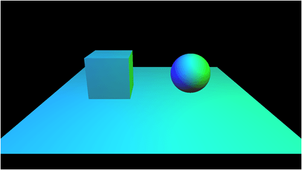
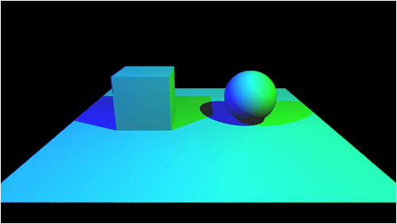
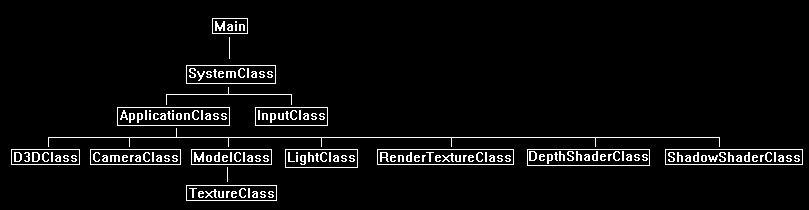
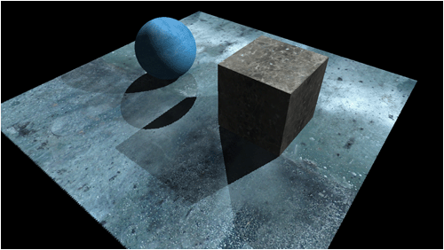

This tutorial will cover how to implement multiple lights when using shadow mapping.
The tutorial is written for DirectX 11 using C++ and HLSL.
The code in this tutorial is based on the previous shadow mapping tutorial.
Also, if you haven't already gone over the multiple light tutorial (Tutorial 11) then I would suggest reviewing that one first as this tutorial assumes you already understand how to illuminate scenes using multiple lights.
Using multiple lights with shadow mapping is an easy extension of the basic shadow mapping technique.
Instead of rendering just a single depth map from one light's perspective you now render a depth map for each light in the scene.
Then you send a depth map (shadow map) into the shader for each light as well as each light's diffuse color and position.
Then for each light you do the exact same shadow process you did for a single light and add all the color results together to get the final pixel value.
To visualize how this works we will setup a scene that has two lights.
The following scene has a blue light positioned behind us and to the left.
And it also has a second green light positioned behind us and to the right.
So, if you look at the sphere you can see the green light to the right illuminating the right side of the sphere and you can see the blue light to the left illuminating the left side of the sphere.
The cyan color along the midsection of the sphere is the even combination of the blue and green lights.

Now if we render a depth map of the scene from the blue light's perspective and then render a depth map of the scene from the green light's perspective, we have what we need to determine where all the shadows will be located.
We send the two depth maps and the position and color of the two lights into the shader and then perform the shadow map algorithm for each light.
This will give us the two final color values for the two lights.
We then add those two color values together and we get the following result:

You will see that the green light casts a blue shadow since blue light is the only thing that is illuminating the surface when there is an absence of green light.
And likewise, the blue light casts a green shadow for the same reason.
Where the shadows intersect in the middle of the scene there is only ambient since neither green nor blue light are illuminating the surface.
Framework
The framework remains the same for this tutorial as we have not added any additional classes.

We will start the code section of the tutorial by examining the revised HLSL shadow shader programs.
Shadow.vs
////////////////////////////////////////////////////////////////////////////////
// Filename: shadow.vs
////////////////////////////////////////////////////////////////////////////////
/////////////
// GLOBALS //
/////////////
We have added a perspective and view matrix for the second light.
cbuffer MatrixBuffer
{
matrix worldMatrix;
matrix viewMatrix;
matrix projectionMatrix;
matrix lightViewMatrix;
matrix lightProjectionMatrix;
matrix lightViewMatrix2;
matrix lightProjectionMatrix2;
};
We have added a position vector for the second light also.
cbuffer LightPositionBuffer
{
float3 lightPosition;
float padding;
float3 lightPosition2;
float padding2;
};
//////////////
// TYPEDEFS //
//////////////
struct VertexInputType
{
float4 position : POSITION;
float2 tex : TEXCOORD0;
float3 normal : NORMAL;
};
The PixelInputType now has a second light position and a second light viewing position.
struct PixelInputType
{
float4 position : SV_POSITION;
float2 tex : TEXCOORD0;
float3 normal : NORMAL;
float4 lightViewPosition : TEXCOORD1;
float3 lightPos : TEXCOORD2;
float4 lightViewPosition2 : TEXCOORD3;
float3 lightPos2 : TEXCOORD4;
};
////////////////////////////////////////////////////////////////////////////////
// Vertex Shader
////////////////////////////////////////////////////////////////////////////////
PixelInputType ShadowVertexShader(VertexInputType input)
{
PixelInputType output;
float4 worldPosition;
// Change the position vector to be 4 units for proper matrix calculations.
input.position.w = 1.0f;
// Calculate the position of the vertex against the world, view, and projection matrices.
output.position = mul(input.position, worldMatrix);
output.position = mul(output.position, viewMatrix);
output.position = mul(output.position, projectionMatrix);
// Calculate the position of the vertice as viewed by the light source.
output.lightViewPosition = mul(input.position, worldMatrix);
output.lightViewPosition = mul(output.lightViewPosition, lightViewMatrix);
output.lightViewPosition = mul(output.lightViewPosition, lightProjectionMatrix);
Calculate the second light's viewing position of the vertex.
// Calculate the position of the vertice as viewed by the second light source.
output.lightViewPosition2 = mul(input.position, worldMatrix);
output.lightViewPosition2 = mul(output.lightViewPosition2, lightViewMatrix2);
output.lightViewPosition2 = mul(output.lightViewPosition2, lightProjectionMatrix2);
// Store the texture coordinates for the pixel shader.
output.tex = input.tex;
// Calculate the normal vector against the world matrix only.
output.normal = mul(input.normal, (float3x3)worldMatrix);
// Normalize the normal vector.
output.normal = normalize(output.normal);
// Calculate the position of the vertex in the world.
worldPosition = mul(input.position, worldMatrix);
// Determine the light position based on the position of the light and the position of the vertex in the world.
output.lightPos = lightPosition.xyz - worldPosition.xyz;
// Normalize the light position vector.
output.lightPos = normalize(output.lightPos);
Calculate the position of the second light.
// Determine the second light position based on the position of the light and the position of the vertex in the world.
output.lightPos2 = lightPosition2.xyz - worldPosition.xyz;
// Normalize the second light position vector.
output.lightPos2 = normalize(output.lightPos2);
return output;
}
Shadow.ps
////////////////////////////////////////////////////////////////////////////////
// Filename: shadow.ps
////////////////////////////////////////////////////////////////////////////////
/////////////
// GLOBALS //
/////////////
Texture2D shaderTexture : register(t0);
Texture2D depthMapTexture : register(t1);
We have added a second depth map texture for the second light.
Texture2D depthMapTexture2 : register(t2);
SamplerState SampleTypeClamp : register(s0);
SamplerState SampleTypeWrap : register(s1);
//////////////////////
// CONSTANT BUFFERS //
//////////////////////
We have added the diffuse color for the second light.
cbuffer LightBuffer
{
float4 ambientColor;
float4 diffuseColor;
float4 diffuseColor2;
float bias;
float3 padding;
};
//////////////
// TYPEDEFS //
//////////////
struct PixelInputType
{
float4 position : SV_POSITION;
float2 tex : TEXCOORD0;
float3 normal : NORMAL;
float4 lightViewPosition : TEXCOORD1;
float3 lightPos : TEXCOORD2;
float4 lightViewPosition2 : TEXCOORD3;
float3 lightPos2 : TEXCOORD4;
};
////////////////////////////////////////////////////////////////////////////////
// Pixel Shader
////////////////////////////////////////////////////////////////////////////////
float4 ShadowPixelShader(PixelInputType input) : SV_TARGET
{
float4 color;
float2 projectTexCoord;
float depthValue;
float lightDepthValue;
float lightIntensity;
float4 textureColor;
// Set the default output color to the ambient light value for all pixels.
color = ambientColor;
Calculate the color/shadow for the first light as normal except for that we don't saturate a final light color anymore.
// Calculate the projected texture coordinates.
projectTexCoord.x = input.lightViewPosition.x / input.lightViewPosition.w / 2.0f + 0.5f;
projectTexCoord.y = -input.lightViewPosition.y / input.lightViewPosition.w / 2.0f + 0.5f;
// Determine if the projected coordinates are in the 0 to 1 range. If it is then this pixel is inside the projected view port.
if((saturate(projectTexCoord.x) == projectTexCoord.x) && (saturate(projectTexCoord.y) == projectTexCoord.y))
{
// Sample the shadow map depth value from the depth texture using the sampler at the projected texture coordinate location.
depthValue = depthMapTexture.Sample(SampleTypeClamp, projectTexCoord).r;
// Calculate the depth of the light.
lightDepthValue = input.lightViewPosition.z / input.lightViewPosition.w;
// Subtract the bias from the lightDepthValue.
lightDepthValue = lightDepthValue - bias;
// Compare the depth of the shadow map value and the depth of the light to determine whether to shadow or to light this pixel.
// If the light is in front of the object then light the pixel, if not then shadow this pixel since an object (occluder) is casting a shadow on it.
if(lightDepthValue < depthValue)
{
// Calculate the amount of light on this pixel.
lightIntensity = saturate(dot(input.normal, input.lightPos));
if(lightIntensity > 0.0f)
{
// Determine the final diffuse color based on the diffuse color and the amount of light intensity.
color += (diffuseColor * lightIntensity);
}
}
}
Now do the same thing for the second light using the second light's shadow map and light variables.
And instead of having a separate color result we just add the value to the color result from the first light.
////////////////
// Second light: Use all the second light variables and textures for calculations. Accumulate the additional light value into the color variable.
////////////////
projectTexCoord.x = input.lightViewPosition2.x / input.lightViewPosition2.w / 2.0f + 0.5f;
projectTexCoord.y = -input.lightViewPosition2.y / input.lightViewPosition2.w / 2.0f + 0.5f;
if((saturate(projectTexCoord.x) == projectTexCoord.x) && (saturate(projectTexCoord.y) == projectTexCoord.y))
{
depthValue = depthMapTexture2.Sample(SampleTypeClamp, projectTexCoord).r;
lightDepthValue = input.lightViewPosition2.z / input.lightViewPosition2.w;
lightDepthValue = lightDepthValue - bias;
if(lightDepthValue < depthValue)
{
lightIntensity = saturate(dot(input.normal, input.lightPos2));
if(lightIntensity > 0.0f)
{
color += (diffuseColor2 * lightIntensity);
}
}
}
And then once we have the colors added together, we perform the saturate.
// Saturate the final light color.
color = saturate(color);
// Sample the pixel color from the texture using the sampler at this texture coordinate location.
textureColor = shaderTexture.Sample(SampleTypeWrap, input.tex);
// Combine the light and texture color.
color = color * textureColor;
return color;
}
Shadowshaderclass.h
////////////////////////////////////////////////////////////////////////////////
// Filename: shadowshaderclass.h
////////////////////////////////////////////////////////////////////////////////
#ifndef _SHADOWSHADERCLASS_H_
#define _SHADOWSHADERCLASS_H_
//////////////
// INCLUDES //
//////////////
#include <d3d11.h>
#include <d3dcompiler.h>
#include <directxmath.h>
#include <fstream>
using namespace DirectX;
using namespace std;
////////////////////////////////////////////////////////////////////////////////
// Class name: ShadowShaderClass
////////////////////////////////////////////////////////////////////////////////
class ShadowShaderClass
{
private:
The MatrixBufferType now has a view and projection matrix for the second light.
struct MatrixBufferType
{
XMMATRIX world;
XMMATRIX view;
XMMATRIX projection;
XMMATRIX lightView;
XMMATRIX lightProjection;
XMMATRIX lightView2;
XMMATRIX lightProjection2;
};
Also, the LightPositionBufferType now has a position vector for the second light.
struct LightPositionBufferType
{
XMFLOAT3 lightPosition;
float padding;
XMFLOAT3 lightPosition2;
float padding2;
};
The LightBufferType now has a diffuse color for the second light.
struct LightBufferType
{
XMFLOAT4 ambientColor;
XMFLOAT4 diffuseColor;
XMFLOAT4 diffuseColor2;
float bias;
XMFLOAT3 padding;
};
public:
ShadowShaderClass();
ShadowShaderClass(const ShadowShaderClass&);
~ShadowShaderClass();
bool Initialize(ID3D11Device*, HWND);
void Shutdown();
bool Render(ID3D11DeviceContext*, int, XMMATRIX, XMMATRIX, XMMATRIX, XMMATRIX, XMMATRIX, ID3D11ShaderResourceView*, ID3D11ShaderResourceView*,
XMFLOAT4, XMFLOAT4, XMFLOAT3, float, XMMATRIX, XMMATRIX, ID3D11ShaderResourceView*, XMFLOAT3, XMFLOAT4);
private:
bool InitializeShader(ID3D11Device*, HWND, WCHAR*, WCHAR*);
void ShutdownShader();
void OutputShaderErrorMessage(ID3D10Blob*, HWND, WCHAR*);
bool SetShaderParameters(ID3D11DeviceContext*, XMMATRIX, XMMATRIX, XMMATRIX, XMMATRIX, XMMATRIX, ID3D11ShaderResourceView*, ID3D11ShaderResourceView*,
XMFLOAT4, XMFLOAT4, XMFLOAT3, float, XMMATRIX, XMMATRIX, ID3D11ShaderResourceView*, XMFLOAT3, XMFLOAT4);
void RenderShader(ID3D11DeviceContext*, int);
private:
ID3D11VertexShader* m_vertexShader;
ID3D11PixelShader* m_pixelShader;
ID3D11InputLayout* m_layout;
ID3D11Buffer* m_matrixBuffer;
ID3D11SamplerState* m_sampleStateClamp;
ID3D11SamplerState* m_sampleStateWrap;
ID3D11Buffer* m_lightPositionBuffer;
ID3D11Buffer* m_lightBuffer;
};
#endif
Shadowshaderclass.cpp
////////////////////////////////////////////////////////////////////////////////
// Filename: shadowshaderclass.cpp
////////////////////////////////////////////////////////////////////////////////
#include "shadowshaderclass.h"
ShadowShaderClass::ShadowShaderClass()
{
m_vertexShader = 0;
m_pixelShader = 0;
m_layout = 0;
m_matrixBuffer = 0;
m_sampleStateClamp = 0;
m_sampleStateWrap = 0;
m_lightPositionBuffer = 0;
m_lightBuffer = 0;
}
ShadowShaderClass::ShadowShaderClass(const ShadowShaderClass& other)
{
}
ShadowShaderClass::~ShadowShaderClass()
{
}
bool ShadowShaderClass::Initialize(ID3D11Device* device, HWND hwnd)
{
wchar_t vsFilename[128], psFilename[128];
int error;
bool result;
// Set the filename of the vertex shader.
error = wcscpy_s(vsFilename, 128, L"../Engine/shadow.vs");
if(error != 0)
{
return false;
}
// Set the filename of the pixel shader.
error = wcscpy_s(psFilename, 128, L"../Engine/shadow.ps");
if(error != 0)
{
return false;
}
// Initialize the vertex and pixel shaders.
result = InitializeShader(device, hwnd, vsFilename, psFilename);
if(!result)
{
return false;
}
return true;
}
void ShadowShaderClass::Shutdown()
{
// Shutdown the vertex and pixel shaders as well as the related objects.
ShutdownShader();
return;
}
The render function now takes as input a view matrix, a projection matrix, a depth map texture, a position, and a diffuse color for the second light.
These variables are then passed into the SetShaderParameters function.
bool ShadowShaderClass::Render(ID3D11DeviceContext* deviceContext, int indexCount, XMMATRIX worldMatrix, XMMATRIX viewMatrix, XMMATRIX projectionMatrix,
XMMATRIX lightViewMatrix, XMMATRIX lightProjectionMatrix, ID3D11ShaderResourceView* texture, ID3D11ShaderResourceView* depthMapTexture,
XMFLOAT4 ambientColor, XMFLOAT4 diffuseColor, XMFLOAT3 lightPosition, float bias,
XMMATRIX lightViewMatrix2, XMMATRIX lightProjectionMatrix2, ID3D11ShaderResourceView* depthMapTexture2, XMFLOAT3 lightPosition2, XMFLOAT4 diffuseColor2)
{
bool result;
// Set the shader parameters that it will use for rendering.
result = SetShaderParameters(deviceContext, worldMatrix, viewMatrix, projectionMatrix, lightViewMatrix, lightProjectionMatrix, texture, depthMapTexture,
ambientColor, diffuseColor, lightPosition, bias, lightViewMatrix2, lightProjectionMatrix2, depthMapTexture2, lightPosition2, diffuseColor2);
if(!result)
{
return false;
}
// Now render the prepared buffers with the shader.
RenderShader(deviceContext, indexCount);
return true;
}
bool ShadowShaderClass::InitializeShader(ID3D11Device* device, HWND hwnd, WCHAR* vsFilename, WCHAR* psFilename)
{
HRESULT result;
ID3D10Blob* errorMessage;
ID3D10Blob* vertexShaderBuffer;
ID3D10Blob* pixelShaderBuffer;
D3D11_INPUT_ELEMENT_DESC polygonLayout[3];
unsigned int numElements;
D3D11_BUFFER_DESC matrixBufferDesc;
D3D11_SAMPLER_DESC samplerDesc;
D3D11_BUFFER_DESC lightBufferDesc;
D3D11_BUFFER_DESC lightPositionBufferDesc;
// Initialize the pointers this function will use to null.
errorMessage = 0;
vertexShaderBuffer = 0;
pixelShaderBuffer = 0;
// Compile the vertex shader code.
result = D3DCompileFromFile(vsFilename, NULL, NULL, "ShadowVertexShader", "vs_5_0", D3D10_SHADER_ENABLE_STRICTNESS, 0,
&vertexShaderBuffer, &errorMessage);
if(FAILED(result))
{
// If the shader failed to compile it should have writen something to the error message.
if(errorMessage)
{
OutputShaderErrorMessage(errorMessage, hwnd, vsFilename);
}
// If there was nothing in the error message then it simply could not find the shader file itself.
else
{
MessageBox(hwnd, vsFilename, L"Missing Shader File", MB_OK);
}
return false;
}
// Compile the pixel shader code.
result = D3DCompileFromFile(psFilename, NULL, NULL, "ShadowPixelShader", "ps_5_0", D3D10_SHADER_ENABLE_STRICTNESS, 0,
&pixelShaderBuffer, &errorMessage);
if(FAILED(result))
{
// If the shader failed to compile it should have writen something to the error message.
if(errorMessage)
{
OutputShaderErrorMessage(errorMessage, hwnd, psFilename);
}
// If there was nothing in the error message then it simply could not find the file itself.
else
{
MessageBox(hwnd, psFilename, L"Missing Shader File", MB_OK);
}
return false;
}
// Create the vertex shader from the buffer.
result = device->CreateVertexShader(vertexShaderBuffer->GetBufferPointer(), vertexShaderBuffer->GetBufferSize(), NULL, &m_vertexShader);
if(FAILED(result))
{
return false;
}
// Create the pixel shader from the buffer.
result = device->CreatePixelShader(pixelShaderBuffer->GetBufferPointer(), pixelShaderBuffer->GetBufferSize(), NULL, &m_pixelShader);
if(FAILED(result))
{
return false;
}
// Create the vertex input layout description.
polygonLayout[0].SemanticName = "POSITION";
polygonLayout[0].SemanticIndex = 0;
polygonLayout[0].Format = DXGI_FORMAT_R32G32B32_FLOAT;
polygonLayout[0].InputSlot = 0;
polygonLayout[0].AlignedByteOffset = 0;
polygonLayout[0].InputSlotClass = D3D11_INPUT_PER_VERTEX_DATA;
polygonLayout[0].InstanceDataStepRate = 0;
polygonLayout[1].SemanticName = "TEXCOORD";
polygonLayout[1].SemanticIndex = 0;
polygonLayout[1].Format = DXGI_FORMAT_R32G32_FLOAT;
polygonLayout[1].InputSlot = 0;
polygonLayout[1].AlignedByteOffset = D3D11_APPEND_ALIGNED_ELEMENT;
polygonLayout[1].InputSlotClass = D3D11_INPUT_PER_VERTEX_DATA;
polygonLayout[1].InstanceDataStepRate = 0;
polygonLayout[2].SemanticName = "NORMAL";
polygonLayout[2].SemanticIndex = 0;
polygonLayout[2].Format = DXGI_FORMAT_R32G32B32_FLOAT;
polygonLayout[2].InputSlot = 0;
polygonLayout[2].AlignedByteOffset = D3D11_APPEND_ALIGNED_ELEMENT;
polygonLayout[2].InputSlotClass = D3D11_INPUT_PER_VERTEX_DATA;
polygonLayout[2].InstanceDataStepRate = 0;
// Get a count of the elements in the layout.
numElements = sizeof(polygonLayout) / sizeof(polygonLayout[0]);
// Create the vertex input layout.
result = device->CreateInputLayout(polygonLayout, numElements, vertexShaderBuffer->GetBufferPointer(), vertexShaderBuffer->GetBufferSize(), &m_layout);
if(FAILED(result))
{
return false;
}
// Release the vertex shader buffer and pixel shader buffer since they are no longer needed.
vertexShaderBuffer->Release();
vertexShaderBuffer = 0;
pixelShaderBuffer->Release();
pixelShaderBuffer = 0;
// Setup the description of the dynamic matrix constant buffer that is in the vertex shader.
matrixBufferDesc.Usage = D3D11_USAGE_DYNAMIC;
matrixBufferDesc.ByteWidth = sizeof(MatrixBufferType);
matrixBufferDesc.BindFlags = D3D11_BIND_CONSTANT_BUFFER;
matrixBufferDesc.CPUAccessFlags = D3D11_CPU_ACCESS_WRITE;
matrixBufferDesc.MiscFlags = 0;
matrixBufferDesc.StructureByteStride = 0;
// Create the constant buffer pointer so we can access the vertex shader constant buffer from within this class.
result = device->CreateBuffer(&matrixBufferDesc, NULL, &m_matrixBuffer);
if(FAILED(result))
{
return false;
}
// Create a clamp texture sampler state description.
samplerDesc.Filter = D3D11_FILTER_MIN_MAG_MIP_LINEAR;
samplerDesc.AddressU = D3D11_TEXTURE_ADDRESS_CLAMP;
samplerDesc.AddressV = D3D11_TEXTURE_ADDRESS_CLAMP;
samplerDesc.AddressW = D3D11_TEXTURE_ADDRESS_CLAMP;
samplerDesc.MipLODBias = 0.0f;
samplerDesc.MaxAnisotropy = 1;
samplerDesc.ComparisonFunc = D3D11_COMPARISON_ALWAYS;
samplerDesc.BorderColor[0] = 0;
samplerDesc.BorderColor[1] = 0;
samplerDesc.BorderColor[2] = 0;
samplerDesc.BorderColor[3] = 0;
samplerDesc.MinLOD = 0;
samplerDesc.MaxLOD = D3D11_FLOAT32_MAX;
// Create the clamp texture sampler state.
result = device->CreateSamplerState(&samplerDesc, &m_sampleStateClamp);
if(FAILED(result))
{
return false;
}
// Create a wrap texture sampler state description.
samplerDesc.Filter = D3D11_FILTER_MIN_MAG_MIP_LINEAR;
samplerDesc.AddressU = D3D11_TEXTURE_ADDRESS_WRAP;
samplerDesc.AddressV = D3D11_TEXTURE_ADDRESS_WRAP;
samplerDesc.AddressW = D3D11_TEXTURE_ADDRESS_WRAP;
samplerDesc.MipLODBias = 0.0f;
samplerDesc.MaxAnisotropy = 1;
samplerDesc.ComparisonFunc = D3D11_COMPARISON_ALWAYS;
samplerDesc.BorderColor[0] = 0;
samplerDesc.BorderColor[1] = 0;
samplerDesc.BorderColor[2] = 0;
samplerDesc.BorderColor[3] = 0;
samplerDesc.MinLOD = 0;
samplerDesc.MaxLOD = D3D11_FLOAT32_MAX;
// Create the wrap texture sampler state.
result = device->CreateSamplerState(&samplerDesc, &m_sampleStateWrap);
if(FAILED(result))
{
return false;
}
// Setup the description of the light position dynamic constant buffer that is in the vertex shader.
lightPositionBufferDesc.Usage = D3D11_USAGE_DYNAMIC;
lightPositionBufferDesc.ByteWidth = sizeof(LightPositionBufferType);
lightPositionBufferDesc.BindFlags = D3D11_BIND_CONSTANT_BUFFER;
lightPositionBufferDesc.CPUAccessFlags = D3D11_CPU_ACCESS_WRITE;
lightPositionBufferDesc.MiscFlags = 0;
lightPositionBufferDesc.StructureByteStride = 0;
// Create the constant buffer pointer so we can access the vertex shader constant buffer from within this class.
result = device->CreateBuffer(&lightPositionBufferDesc, NULL, &m_lightPositionBuffer);
if(FAILED(result))
{
return false;
}
// Setup the description of the light dynamic constant buffer that is in the pixel shader.
lightBufferDesc.Usage = D3D11_USAGE_DYNAMIC;
lightBufferDesc.ByteWidth = sizeof(LightBufferType);
lightBufferDesc.BindFlags = D3D11_BIND_CONSTANT_BUFFER;
lightBufferDesc.CPUAccessFlags = D3D11_CPU_ACCESS_WRITE;
lightBufferDesc.MiscFlags = 0;
lightBufferDesc.StructureByteStride = 0;
// Create the constant buffer pointer so we can access the pixel shader constant buffer from within this class.
result = device->CreateBuffer(&lightBufferDesc, NULL, &m_lightBuffer);
if(FAILED(result))
{
return false;
}
return true;
}
void ShadowShaderClass::ShutdownShader()
{
// Release the light constant buffer.
if(m_lightBuffer)
{
m_lightBuffer->Release();
m_lightBuffer = 0;
}
// Release the light position constant buffer.
if(m_lightPositionBuffer)
{
m_lightPositionBuffer->Release();
m_lightPositionBuffer = 0;
}
// Release the wrap sampler state.
if(m_sampleStateWrap)
{
m_sampleStateWrap->Release();
m_sampleStateWrap = 0;
}
// Release the clamp sampler state.
if(m_sampleStateClamp)
{
m_sampleStateClamp->Release();
m_sampleStateClamp = 0;
}
// Release the matrix constant buffer.
if(m_matrixBuffer)
{
m_matrixBuffer->Release();
m_matrixBuffer = 0;
}
// Release the layout.
if(m_layout)
{
m_layout->Release();
m_layout = 0;
}
// Release the pixel shader.
if(m_pixelShader)
{
m_pixelShader->Release();
m_pixelShader = 0;
}
// Release the vertex shader.
if(m_vertexShader)
{
m_vertexShader->Release();
m_vertexShader = 0;
}
return;
}
void ShadowShaderClass::OutputShaderErrorMessage(ID3D10Blob* errorMessage, HWND hwnd, WCHAR* shaderFilename)
{
char* compileErrors;
unsigned long long bufferSize, i;
ofstream fout;
// Get a pointer to the error message text buffer.
compileErrors = (char*)(errorMessage->GetBufferPointer());
// Get the length of the message.
bufferSize = errorMessage->GetBufferSize();
// Open a file to write the error message to.
fout.open("shader-error.txt");
// Write out the error message.
for(i=0; i<bufferSize; i++)
{
fout << compileErrors[i];
}
// Close the file.
fout.close();
// Release the error message.
errorMessage->Release();
errorMessage = 0;
// Pop a message up on the screen to notify the user to check the text file for compile errors.
MessageBox(hwnd, L"Error compiling shader. Check shader-error.txt for message.", shaderFilename, MB_OK);
return;
}
The second light variables are now set in the shader through this function.
bool ShadowShaderClass::SetShaderParameters(ID3D11DeviceContext* deviceContext, XMMATRIX worldMatrix, XMMATRIX viewMatrix, XMMATRIX projectionMatrix,
XMMATRIX lightViewMatrix, XMMATRIX lightProjectionMatrix, ID3D11ShaderResourceView* texture, ID3D11ShaderResourceView* depthMapTexture,
XMFLOAT4 ambientColor, XMFLOAT4 diffuseColor, XMFLOAT3 lightPosition, float bias,
XMMATRIX lightViewMatrix2, XMMATRIX lightProjectionMatrix2, ID3D11ShaderResourceView* depthMapTexture2, XMFLOAT3 lightPosition2, XMFLOAT4 diffuseColor2)
{
HRESULT result;
D3D11_MAPPED_SUBRESOURCE mappedResource;
MatrixBufferType* dataPtr;
unsigned int bufferNumber;
LightPositionBufferType* dataPtr2;
LightBufferType* dataPtr3;
// Transpose the matrices to prepare them for the shader.
worldMatrix = XMMatrixTranspose(worldMatrix);
viewMatrix = XMMatrixTranspose(viewMatrix);
projectionMatrix = XMMatrixTranspose(projectionMatrix);
lightViewMatrix = XMMatrixTranspose(lightViewMatrix);
lightProjectionMatrix = XMMatrixTranspose(lightProjectionMatrix);
lightViewMatrix2 = XMMatrixTranspose(lightViewMatrix2);
lightProjectionMatrix2 = XMMatrixTranspose(lightProjectionMatrix2);
// Lock the constant buffer so it can be written to.
result = deviceContext->Map(m_matrixBuffer, 0, D3D11_MAP_WRITE_DISCARD, 0, &mappedResource);
if(FAILED(result))
{
return false;
}
// Get a pointer to the data in the constant buffer.
dataPtr = (MatrixBufferType*)mappedResource.pData;
// Copy the matrices into the constant buffer.
dataPtr->world = worldMatrix;
dataPtr->view = viewMatrix;
dataPtr->projection = projectionMatrix;
dataPtr->lightView = lightViewMatrix;
dataPtr->lightProjection = lightProjectionMatrix;
dataPtr->lightView2 = lightViewMatrix2;
dataPtr->lightProjection2 = lightProjectionMatrix2;
// Unlock the constant buffer.
deviceContext->Unmap(m_matrixBuffer, 0);
// Set the position of the constant buffer in the vertex shader.
bufferNumber = 0;
// Finally set the constant buffer in the vertex shader with the updated values.
deviceContext->VSSetConstantBuffers(bufferNumber, 1, &m_matrixBuffer);
// Lock the light position constant buffer so it can be written to.
result = deviceContext->Map(m_lightPositionBuffer, 0, D3D11_MAP_WRITE_DISCARD, 0, &mappedResource);
if(FAILED(result))
{
return false;
}
// Get a pointer to the data in the constant buffer.
dataPtr2 = (LightPositionBufferType*)mappedResource.pData;
// Copy the lighting variables into the constant buffer.
dataPtr2->lightPosition = lightPosition;
dataPtr2->padding = 0.0f;
dataPtr2->lightPosition2 = lightPosition2;
dataPtr2->padding2 = 0.0f;
// Unlock the constant buffer.
deviceContext->Unmap(m_lightPositionBuffer, 0);
// Set the position of the light constant buffer in the vertex shader.
bufferNumber = 1;
// Finally set the light constant buffer in the vertex shader with the updated values.
deviceContext->VSSetConstantBuffers(bufferNumber, 1, &m_lightPositionBuffer);
// Lock the light constant buffer so it can be written to.
result = deviceContext->Map(m_lightBuffer, 0, D3D11_MAP_WRITE_DISCARD, 0, &mappedResource);
if(FAILED(result))
{
return false;
}
// Get a pointer to the data in the constant buffer.
dataPtr3 = (LightBufferType*)mappedResource.pData;
// Copy the lighting variables into the constant buffer.
dataPtr3->ambientColor = ambientColor;
dataPtr3->diffuseColor = diffuseColor;
dataPtr3->diffuseColor2 = diffuseColor2;
dataPtr3->bias = bias;
dataPtr3->padding = XMFLOAT3(0.0f, 0.0f, 0.0f);
// Unlock the constant buffer.
deviceContext->Unmap(m_lightBuffer, 0);
// Set the position of the light constant buffer in the pixel shader.
bufferNumber = 0;
// Finally set the light constant buffer in the pixel shader with the updated values.
deviceContext->PSSetConstantBuffers(bufferNumber, 1, &m_lightBuffer);
// Set shader texture resources in the pixel shader.
deviceContext->PSSetShaderResources(0, 1, &texture);
deviceContext->PSSetShaderResources(1, 1, &depthMapTexture);
deviceContext->PSSetShaderResources(2, 1, &depthMapTexture2);
return true;
}
void ShadowShaderClass::RenderShader(ID3D11DeviceContext* deviceContext, int indexCount)
{
// Set the vertex input layout.
deviceContext->IASetInputLayout(m_layout);
// Set the vertex and pixel shaders that will be used to render this triangle.
deviceContext->VSSetShader(m_vertexShader, NULL, 0);
deviceContext->PSSetShader(m_pixelShader, NULL, 0);
// Set the sampler state in the pixel shader.
deviceContext->PSSetSamplers(0, 1, &m_sampleStateClamp);
deviceContext->PSSetSamplers(1, 1, &m_sampleStateWrap);
// Render the geometry.
deviceContext->DrawIndexed(indexCount, 0, 0);
return;
}
Applicationclass.h
////////////////////////////////////////////////////////////////////////////////
// Filename: applicationclass.h
////////////////////////////////////////////////////////////////////////////////
#ifndef _APPLICATIONCLASS_H_
#define _APPLICATIONCLASS_H_
/////////////
// GLOBALS //
/////////////
const bool FULL_SCREEN = false;
const bool VSYNC_ENABLED = true;
const float SCREEN_DEPTH = 100.0f;
const float SCREEN_NEAR = 1.0f;
const int SHADOWMAP_WIDTH = 1024;
const int SHADOWMAP_HEIGHT = 1024;
///////////////////////
// MY CLASS INCLUDES //
///////////////////////
#include "d3dclass.h"
#include "inputclass.h"
#include "cameraclass.h"
#include "modelclass.h"
#include "lightclass.h"
#include "rendertextureclass.h"
#include "depthshaderclass.h"
#include "shadowshaderclass.h"
////////////////////////////////////////////////////////////////////////////////
// Class name: ApplicationClass
////////////////////////////////////////////////////////////////////////////////
class ApplicationClass
{
public:
ApplicationClass();
ApplicationClass(const ApplicationClass&);
~ApplicationClass();
bool Initialize(int, int, HWND);
void Shutdown();
bool Frame(InputClass*);
private:
bool RenderDepthToTexture();
There is now an additional function for rendering the scene from the second light's perspective onto a second depth map render texture.
bool RenderDepthToTexture2();
bool Render();
private:
We have added a second light and a second render to texture object for the second light.
D3DClass* m_Direct3D;
CameraClass* m_Camera;
ModelClass *m_CubeModel, *m_SphereModel, *m_GroundModel;
LightClass* m_Light;
LightClass* m_Light2;
RenderTextureClass* m_RenderTexture;
RenderTextureClass* m_RenderTexture2;
DepthShaderClass* m_DepthShader;
ShadowShaderClass* m_ShadowShader;
float m_shadowMapBias;
};
#endif
Applicationclass.cpp
////////////////////////////////////////////////////////////////////////////////
// Filename: applicationclass.cpp
////////////////////////////////////////////////////////////////////////////////
#include "applicationclass.h"
Initialize the second light and second render to texture to null in the class constructor.
ApplicationClass::ApplicationClass()
{
m_Direct3D = 0;
m_Camera = 0;
m_CubeModel = 0;
m_SphereModel = 0;
m_GroundModel = 0;
m_Light = 0;
m_Light2 = 0;
m_RenderTexture = 0;
m_RenderTexture2 = 0;
m_DepthShader = 0;
m_ShadowShader = 0;
}
ApplicationClass::ApplicationClass(const ApplicationClass& other)
{
}
ApplicationClass::~ApplicationClass()
{
}
bool ApplicationClass::Initialize(int screenWidth, int screenHeight, HWND hwnd)
{
char modelFilename[128], textureFilename[128];
bool result;
// Create and initialize the Direct3D object.
m_Direct3D = new D3DClass;
result = m_Direct3D->Initialize(screenWidth, screenHeight, VSYNC_ENABLED, hwnd, FULL_SCREEN, SCREEN_DEPTH, SCREEN_NEAR);
if(!result)
{
MessageBox(hwnd, L"Could not initialize Direct3D.", L"Error", MB_OK);
return false;
}
// Create and initialize the camera object.
m_Camera = new CameraClass;
We will position the camera behind the scene so we can clearly see the double light effect.
m_Camera->SetPosition(-8.0f, 7.0f, 8.0f);
m_Camera->SetRotation(35.0f, 135.0f, 0.0f);
m_Camera->Render();
// Create and initialize the cube model object.
m_CubeModel = new ModelClass;
strcpy_s(modelFilename, "../Engine/data/cube.txt");
strcpy_s(textureFilename, "../Engine/data/wall01.tga");
result = m_CubeModel->Initialize(m_Direct3D->GetDevice(), m_Direct3D->GetDeviceContext(), modelFilename, textureFilename);
if(!result)
{
MessageBox(hwnd, L"Could not initialize the cube model object.", L"Error", MB_OK);
return false;
}
// Create and initialize the sphere model object.
m_SphereModel = new ModelClass;
strcpy_s(modelFilename, "../Engine/data/sphere.txt");
strcpy_s(textureFilename, "../Engine/data/ice.tga");
result = m_SphereModel->Initialize(m_Direct3D->GetDevice(), m_Direct3D->GetDeviceContext(), modelFilename, textureFilename);
if(!result)
{
MessageBox(hwnd, L"Could not initialize the sphere model object.", L"Error", MB_OK);
return false;
}
// Create and initialize the ground model object.
m_GroundModel = new ModelClass;
strcpy_s(modelFilename, "../Engine/data/plane01.txt");
strcpy_s(textureFilename, "../Engine/data/metal001.tga");
result = m_GroundModel->Initialize(m_Direct3D->GetDevice(), m_Direct3D->GetDeviceContext(), modelFilename, textureFilename);
if(!result)
{
MessageBox(hwnd, L"Could not initialize the ground model object.", L"Error", MB_OK);
return false;
}
// Create and initialize the light object.
m_Light = new LightClass;
m_Light->SetAmbientColor(0.15f, 0.15f, 0.15f, 1.0f);
m_Light->SetDiffuseColor(1.0f, 1.0f, 1.0f, 1.0f);
m_Light->SetLookAt(0.0f, 0.0f, 0.0f);
m_Light->GenerateProjectionMatrix(SCREEN_DEPTH, SCREEN_NEAR);
// Create and initialize the render to texture object.
m_RenderTexture = new RenderTextureClass;
result = m_RenderTexture->Initialize(m_Direct3D->GetDevice(), SHADOWMAP_WIDTH, SHADOWMAP_HEIGHT, SCREEN_DEPTH, SCREEN_NEAR, 1);
if(!result)
{
MessageBox(hwnd, L"Could not initialize the render texture object.", L"Error", MB_OK);
return false;
}
// Create and initialize the depth shader object.
m_DepthShader = new DepthShaderClass;
result = m_DepthShader->Initialize(m_Direct3D->GetDevice(), hwnd);
if(!result)
{
MessageBox(hwnd, L"Could not initialize the depth shader object.", L"Error", MB_OK);
return false;
}
// Create and initialize the shadow shader object.
m_ShadowShader = new ShadowShaderClass;
result = m_ShadowShader->Initialize(m_Direct3D->GetDevice(), hwnd);
if(!result)
{
MessageBox(hwnd, L"Could not initialize the shadow shader object.", L"Error", MB_OK);
return false;
}
// Set the shadow map bias to fix the floating point precision issues (shadow acne/lines artifacts).
m_shadowMapBias = 0.0022f;
Setup the second light object.
// Create and initialize the second light object.
m_Light2 = new LightClass;
m_Light2->SetDiffuseColor(1.0f, 1.0f, 1.0f, 1.0f);
m_Light2->SetLookAt(0.0f, 0.0f, 0.0f);
m_Light2->GenerateProjectionMatrix(SCREEN_DEPTH, SCREEN_NEAR);
Setup the second render to texture object.
// Create and initialize the second render to texture object.
m_RenderTexture2 = new RenderTextureClass;
result = m_RenderTexture2->Initialize(m_Direct3D->GetDevice(), SHADOWMAP_WIDTH, SHADOWMAP_HEIGHT, SCREEN_DEPTH, SCREEN_NEAR, 1);
if(!result)
{
MessageBox(hwnd, L"Could not initialize the second render to texture object.", L"Error", MB_OK);
return false;
}
return true;
}
The second light object and second render to texture object are released in the Shutdown function.
void ApplicationClass::Shutdown()
{
// Release the second render to texture object.
if(m_RenderTexture2)
{
m_RenderTexture2->Shutdown();
delete m_RenderTexture2;
m_RenderTexture2 = 0;
}
// Release the second light object.
if(m_Light2)
{
delete m_Light2;
m_Light2 = 0;
}
// Release the shadow shader object.
if(m_ShadowShader)
{
m_ShadowShader->Shutdown();
delete m_ShadowShader;
m_ShadowShader = 0;
}
// Release the depth shader object.
if(m_DepthShader)
{
m_DepthShader->Shutdown();
delete m_DepthShader;
m_DepthShader = 0;
}
// Release the render texture object.
if(m_RenderTexture)
{
m_RenderTexture->Shutdown();
delete m_RenderTexture;
m_RenderTexture = 0;
}
// Release the light object.
if(m_Light)
{
delete m_Light;
m_Light = 0;
}
// Release the ground model object.
if(m_GroundModel)
{
m_GroundModel->Shutdown();
delete m_GroundModel;
m_GroundModel = 0;
}
// Release the sphere model object.
if(m_SphereModel)
{
m_SphereModel->Shutdown();
delete m_SphereModel;
m_SphereModel = 0;
}
// Release the cube model object.
if(m_CubeModel)
{
m_CubeModel->Shutdown();
delete m_CubeModel;
m_CubeModel = 0;
}
// Release the camera object.
if(m_Camera)
{
delete m_Camera;
m_Camera = 0;
}
// Release the Direct3D object.
if(m_Direct3D)
{
m_Direct3D->Shutdown();
delete m_Direct3D;
m_Direct3D = 0;
}
return;
}
bool ApplicationClass::Frame(InputClass* Input)
{
bool result;
// Check if the user pressed escape and wants to exit the application.
if(Input->IsEscapePressed())
{
return false;
}
Set the first light behind the camera and to the right.
Set the second light behind the camera and to the left.
// Set the position of the first light and generate it's new view matrix.
m_Light->SetPosition(5.0f, 8.0f, -5.0f);
m_Light->GenerateViewMatrix();
// Set the position of the second light and generate it's new view matrix.
m_Light2->SetPosition(-5.0f, 8.0f, -5.0f);
m_Light2->GenerateViewMatrix();
// Render the scene depth of the first light to the render texture.
result = RenderDepthToTexture();
if(!result)
{
return false;
}
The scene is rendered from the second light's perspective onto the second render to texture.
// Render the scene depth of the second light to the render texture.
result = RenderDepthToTexture2();
if(!result)
{
return false;
}
// Render the graphics scene.
result = Render();
if(!result)
{
return false;
}
return true;
}
bool ApplicationClass::RenderDepthToTexture()
{
XMMATRIX translateMatrix, lightViewMatrix, lightProjectionMatrix;
bool result;
// Set the render target to be the render to texture. Also clear the render to texture.
m_RenderTexture->SetRenderTarget(m_Direct3D->GetDeviceContext());
m_RenderTexture->ClearRenderTarget(m_Direct3D->GetDeviceContext(), 0.0f, 0.0f, 0.0f, 1.0f);
// Get the view and orthographic matrices from the light object.
m_Light->GetViewMatrix(lightViewMatrix);
m_Light->GetProjectionMatrix(lightProjectionMatrix);
// Setup the translation matrix for the cube model.
translateMatrix = XMMatrixTranslation(-2.0f, 2.0f, 0.0f);
// Render the cube model using the depth shader.
m_CubeModel->Render(m_Direct3D->GetDeviceContext());
result = m_DepthShader->Render(m_Direct3D->GetDeviceContext(), m_CubeModel->GetIndexCount(), translateMatrix, lightViewMatrix, lightProjectionMatrix);
if(!result)
{
return false;
}
// Setup the translation matrix for the sphere model.
translateMatrix = XMMatrixTranslation(2.0f, 2.0f, 0.0f);
// Render the sphere model using the depth shader.
m_SphereModel->Render(m_Direct3D->GetDeviceContext());
result = m_DepthShader->Render(m_Direct3D->GetDeviceContext(), m_SphereModel->GetIndexCount(), translateMatrix, lightViewMatrix, lightProjectionMatrix);
if(!result)
{
return false;
}
// Setup the translation matrix for the ground model.
translateMatrix = XMMatrixTranslation(0.0f, 1.0f, 0.0f);
// Render the ground model using the depth shader.
m_GroundModel->Render(m_Direct3D->GetDeviceContext());
result = m_DepthShader->Render(m_Direct3D->GetDeviceContext(), m_GroundModel->GetIndexCount(), translateMatrix, lightViewMatrix, lightProjectionMatrix);
if(!result)
{
return false;
}
// Reset the render target back to the original back buffer and not the render to texture anymore. Also reset the viewport back to the original.
m_Direct3D->SetBackBufferRenderTarget();
m_Direct3D->ResetViewport();
return true;
}
This is the new function for rendering the scene from the second light's perspective onto the second render to texture object.
It works the same as the first RenderDepthToTexture function except that it uses all the second light variables and render texture.
bool ApplicationClass::RenderDepthToTexture2()
{
XMMATRIX translateMatrix, lightViewMatrix, lightProjectionMatrix;
bool result;
// Set the render target to be the render to texture. Also clear the render to texture.
m_RenderTexture2->SetRenderTarget(m_Direct3D->GetDeviceContext());
m_RenderTexture2->ClearRenderTarget(m_Direct3D->GetDeviceContext(), 0.0f, 0.0f, 0.0f, 1.0f);
// Get the view and orthographic matrices from the light object.
m_Light2->GetViewMatrix(lightViewMatrix);
m_Light2->GetProjectionMatrix(lightProjectionMatrix);
// Setup the translation matrix for the cube model.
translateMatrix = XMMatrixTranslation(-2.0f, 2.0f, 0.0f);
// Render the cube model using the depth shader.
m_CubeModel->Render(m_Direct3D->GetDeviceContext());
result = m_DepthShader->Render(m_Direct3D->GetDeviceContext(), m_CubeModel->GetIndexCount(), translateMatrix, lightViewMatrix, lightProjectionMatrix);
if(!result)
{
return false;
}
// Setup the translation matrix for the sphere model.
translateMatrix = XMMatrixTranslation(2.0f, 2.0f, 0.0f);
// Render the sphere model using the depth shader.
m_SphereModel->Render(m_Direct3D->GetDeviceContext());
result = m_DepthShader->Render(m_Direct3D->GetDeviceContext(), m_SphereModel->GetIndexCount(), translateMatrix, lightViewMatrix, lightProjectionMatrix);
if(!result)
{
return false;
}
// Setup the translation matrix for the ground model.
translateMatrix = XMMatrixTranslation(0.0f, 1.0f, 0.0f);
// Render the ground model using the depth shader.
m_GroundModel->Render(m_Direct3D->GetDeviceContext());
result = m_DepthShader->Render(m_Direct3D->GetDeviceContext(), m_GroundModel->GetIndexCount(), translateMatrix, lightViewMatrix, lightProjectionMatrix);
if(!result)
{
return false;
}
// Reset the render target back to the original back buffer and not the render to texture anymore. Also reset the viewport back to the original.
m_Direct3D->SetBackBufferRenderTarget();
m_Direct3D->ResetViewport();
return true;
}
bool ApplicationClass::Render()
{
XMMATRIX worldMatrix, viewMatrix, projectionMatrix, lightViewMatrix, lightProjectionMatrix, lightViewMatrix2, lightProjectionMatrix2;
bool result;
// Clear the buffers to begin the scene.
m_Direct3D->BeginScene(0.0f, 0.0f, 0.0f, 1.0f);
// Get the world, view, and projection matrices from the camera and d3d objects.
m_Direct3D->GetWorldMatrix(worldMatrix);
m_Camera->GetViewMatrix(viewMatrix);
m_Direct3D->GetProjectionMatrix(projectionMatrix);
// Get the view and projection matrices from the first light.
m_Light->GetViewMatrix(lightViewMatrix);
m_Light->GetProjectionMatrix(lightProjectionMatrix);
Get the second light matrices.
// Get the view and projection matrices from the second light.
m_Light2->GetViewMatrix(lightViewMatrix2);
m_Light2->GetProjectionMatrix(lightProjectionMatrix2);
Now perform all the rendering passing in the additional second light parameters into the shadow shader.
// Setup the translation matrix for the cube model.
worldMatrix = XMMatrixTranslation(-2.0f, 2.0f, 0.0f);
// Render the cube model using the shadow shader.
m_CubeModel->Render(m_Direct3D->GetDeviceContext());
result = m_ShadowShader->Render(m_Direct3D->GetDeviceContext(), m_CubeModel->GetIndexCount(), worldMatrix, viewMatrix, projectionMatrix, lightViewMatrix, lightProjectionMatrix,
m_CubeModel->GetTexture(), m_RenderTexture->GetShaderResourceView(), m_Light->GetAmbientColor(), m_Light->GetDiffuseColor(), m_Light->GetPosition(), m_shadowMapBias,
lightViewMatrix2, lightProjectionMatrix2, m_RenderTexture2->GetShaderResourceView(), m_Light2->GetPosition(), m_Light2->GetDiffuseColor());
if(!result)
{
return false;
}
// Setup the translation matrix for the sphere model.
worldMatrix = XMMatrixTranslation(2.0f, 2.0f, 0.0f);
// Render the sphere model using the shadow shader.
m_SphereModel->Render(m_Direct3D->GetDeviceContext());
result = m_ShadowShader->Render(m_Direct3D->GetDeviceContext(), m_SphereModel->GetIndexCount(), worldMatrix, viewMatrix, projectionMatrix, lightViewMatrix, lightProjectionMatrix,
m_SphereModel->GetTexture(), m_RenderTexture->GetShaderResourceView(), m_Light->GetAmbientColor(), m_Light->GetDiffuseColor(), m_Light->GetPosition(), m_shadowMapBias,
lightViewMatrix2, lightProjectionMatrix2, m_RenderTexture2->GetShaderResourceView(), m_Light2->GetPosition(), m_Light2->GetDiffuseColor());
if(!result)
{
return false;
}
// Setup the translation matrix for the ground model.
worldMatrix = XMMatrixTranslation(0.0f, 1.0f, 0.0f);
// Render the ground model using the shadow shader.
m_GroundModel->Render(m_Direct3D->GetDeviceContext());
result = m_ShadowShader->Render(m_Direct3D->GetDeviceContext(), m_GroundModel->GetIndexCount(), worldMatrix, viewMatrix, projectionMatrix, lightViewMatrix, lightProjectionMatrix,
m_GroundModel->GetTexture(), m_RenderTexture->GetShaderResourceView(), m_Light->GetAmbientColor(), m_Light->GetDiffuseColor(), m_Light->GetPosition(), m_shadowMapBias,
lightViewMatrix2, lightProjectionMatrix2, m_RenderTexture2->GetShaderResourceView(), m_Light2->GetPosition(), m_Light2->GetDiffuseColor());
if(!result)
{
return false;
}
// Present the rendered scene to the screen.
m_Direct3D->EndScene();
return true;
}
Summary
We can now illuminate the scene with multiple lights that all cast shadows.

To Do Exercises
1. Recompile and run the program.
2. Modify the color and position of the lights to see the effect on the scene.
3. Rewrite the code to handle three lights. Change the program flow to use for loops to loop through each light. Set the lights, render textures, and such to be arrays.
Source Code
Source Code and Data Files: dx11win10tut42_src.zip